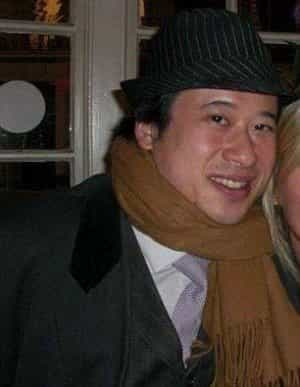

< < < Back
Wilkes McDermid Was Yet Another Victim Of A Society That Doesn’t Care About Fulfilling Men’s Basic Needs – Return Of Kings
“Don’t cry because it’s over, smile because it happened.”
-Dr. Seuss
On Feb 8, 2015, shortly after enjoying a gourmet steak dinner, Wilkes McDermid, a 39 year-old food blogger and to some a minor celebrity in London, lept to his death from the the upscale restaurant Coq D’Argent. It wasn’t the first time someone had committed suicide from leaping from the some 80-foot tall building. But what is different in McDermid’s case, is the reason for why he decided to take his own life.
In His Own (And Last) Words
In what has to be the most lucidly written suicide note I’ve ever seen, McDermid makes clear his reasons for leaving this world, summing it up in this way:
The reason for my death is simple. I have concluded that in the realm of dating and relationships the primary characteristics required for men are as follows.
-Height: above 5ft10
-Race: huge bias towards caucasian and black
-Wealth: or other manifestation of power
From my observations and research it appears that you need two of the three criteria for success with very few exceptions. What does this mean it means that it’s “game over” for me. By choosing to depart early, all I am doing is to accelerate the process of natural selection whilst saving myself a great deal of long term pain in the process.
McDermid goes on to calmly and rationally make his case, in a manner that, on rational and logical grounds, is hard to refute—after all, many studies have validated the fact that women the world over have a marked preference for male height; that White or failing that Black men do indeed fare well on the mating market ceteris paribus; and that Asian men, in the Western world at least, come dead last in terms of desirability.
Another Elliot Rodger?

When I first found out about McDermid’s situation, I couldn’t help but think back to manosphere critics’ favorite whipping boy Elliot Rodger, the American spree shooter whose bizarre manifesto and final YouTube message sparked an international conversation about a range of issues.
Rodger was held out as the result of the sector of the Internet that concerns itself with the interests, needs, and yes, challenges of men—a result that is by its very nature, a warped, twisted, and perverted one, that is obsessed with equal parts entitlement to women’s bodies and simultaneous hatred of women, too.
But, while the world reacted to the Rodger tragedy, McDermid’s untimely demise barely registered a blip on the UK press’ radar screen, and didn’t even break the American media markets.
The question has to be why?
Perhaps it’s because unlike Rodger, McDermid only took his own life? Perhaps because unlike Rodger, McDermid’s manifesto didn’t have harsh sounding words reserved for the ladies who rebuffed him? Or perhaps it was because unlike Rodger, who professed to have attempted game and pickup and failed, McDermid’s last communication to humanity contained no such references?
Maybe it was all of the above. But what definitely leapt out at me about the McDermid tragedy, was the utter indifference of it all on the part of the wider public. It was as if we were perfectly cool with a man offing himself. So long it’s only himself, and not anyone else—especially women.
After all, it’s a well known fact that men kill themselves at an astonishing rate, and even suicides of Oscar-winning national treasures like the late Robin Williams can’t spark the kind of outpouring of humanity that Rodger’s rampage could with regard to women (even when it was proven that he killed more men than anyone else).
Of course, for those of us inside the manosphere, the solution to McDermid’s woes was easy: get game, right? And for those on the outside looking in, the answer is just as easy: get therapy, right?
Well, here’s the problem with both sides of the divide: neither are keeping it brutally 100.
The Problem With Both “Schools” Of Thought

Game and pickup boosters are correct to point out that guys like McDermid must work to increase their chances of success in the sexual marketplace. However, the harsh reality is that race, appearance, height, and many other basic characteristics do matter, and all the game in the world can’t change certain aspects of one’s humanity.
And as for the folks who swear by stuff like Cognitive Behavorial Therapy and the like—CBT hasn’t proven itself effective in assisting men with meeting their mating goals. If they were, there would be no need for game in the first place, because therapy-based models would be getting the job done.
Most of the game and pickup critics—especially women themselves—don’t understand a fundamental aspect of the male mind: that we do what works, not what “ought” to work, or what “should” work, because it comports to what we think the world should be.
The simple truth of the matter is that CBT and the like simply doesn’t work, as McDermid himself has made clear:
For those of you who don’t know, I did end up in The Priory Hospital in Roehampton where I met some awesome people (yes, some were famous). However I found that they were low on facts and relied heavily on emotional ‘one-liners’, not logic. It also seems to address the ‘symptoms’ of the issue, not the problem itself.
I was repeatedly told to “trust the process”, but no-one was willing to outline this mystical process. To me it was one step removed from a cult with pseudo science used to ‘persuade’ rather than educate. For one session at The Priory I was told to stare at an orange for an hour… Make your own conclusions on how effective that technique was…
Obviously, mainstream psychological counseling services are ill-equipped to contend with the male mating mind, how and why it works, and how to put a guy on the right track toward meeting his mating goals. As many of us know all too well, (straight) male sexual desire is at the very least looked on with a side eye, if not outright vilified and excoriated.
In Summation
Somehow people – in our time today, straight men – are supposed to treat their attraction triggers like a light switch that they can turn on or off, or perhaps more like a dimmer light dial, where it can be adjusted at whatever setting is desired.
They are also forced to endure a “trust the process” party line from mainstream therapists who have no idea how to help them achieve their goals, as well as a manosphere counterculture that cannot give them the cure-all they are looking for to “solve” their race, height, or whatever other characteristic they view as their problem.
Regretfully, McDermid won’t be the last victim of today’s harsh sexual marketplace.
Read More: 5 Signs A Girl Has Daddy Issues


{kind=link}
{kind=link}